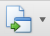

视频流量
统计某一段时间内不同车辆视频查看的流量。
在左侧导航菜单栏中单击进入视频流量页面，如下图所示。
Fig 76 视频流量统计
| 1. | 设置查询条件，系统支持单个和组合查询。 |
| 2. | 单击〖 |
| 3. | （可选）单击〖〗按钮右侧的下拉箭头，选择导出类型，弹出参数设置页面，设置对应参数后单击〖OK〗，弹出另存为对话框，选择保存路径，单击〖OK〗导出报表。 |
| 4. | （可选）单击〖〗按钮右侧的下拉箭头，选择导出类型，弹出参数设置页面，设置对应参数后单击〖OK〗，弹出另存为对话框，选择保存路径，单击〖OK〗导出报表。 |
| 5. | （可选）单击〖 |
| 6. | （可选）单击〖 报表页面将添加设计好的水印。
|